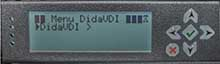
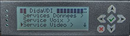
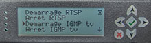
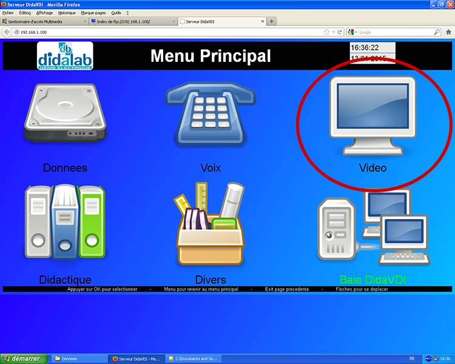
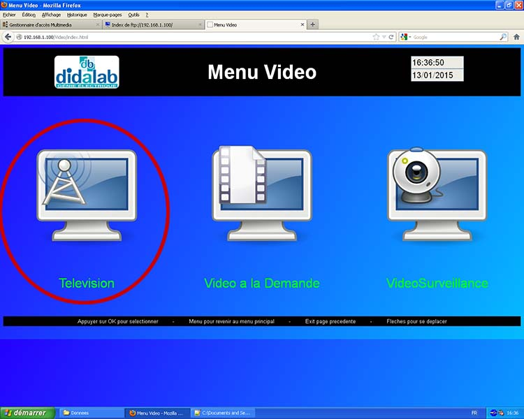

Présentation:
Comme son nom l'indique, le VDI est capable de fournir des services liés à l'image, en occurrence la TV, la video surveillance grace a des webcams interfacés en réseaux ou des cameras ip, ainsi qu'un service de videos à la demande.
I) L'utilisation de la TV (TNT)
La première chose a faire est l'activation du service IMGP tv se trouvant dans:
DiaVID -> service vidéo -> démarrage IMGP tv
.   
Ce service permettra la visuation de la TNT classique via la SetTopBox interfacant la télévision du réseau ethernet. Cette fonction n'est cependent utilisable que lorsque le VDI est connecté a internet. Il est inpossible de paramettrer le VDI par son interface utilisateur classique affin que celui-ci supporte le réseau du lycée. L'avantage d'utiliser ce système est que la TV est également accessible depuis un navigateur internet.
L'étape suivante est suddit tout simplement de sélectionner la TV dans l'interface par télécommande ou via l'interface web, disponible à l'addresse http://192.168.1.100, à travers les menus suivants:
Video -> Télévision

